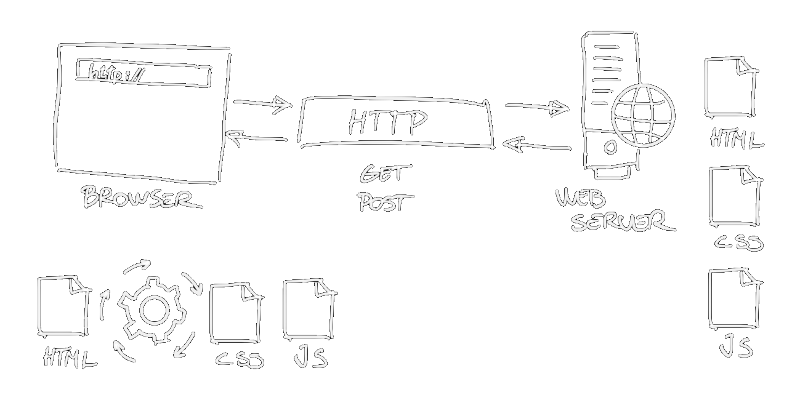

Lær at kode din egen hjemmeside
Aften 8
Overblik
- Hvad vi har lært (repetition)
- Wordpress og andre alternativer
- Øvelser
- Gennemgang med Wordpress
- Muligheder med Wordpress og det vi har lært på dette kursus
- Flere sider på en SPA
Hvor er vi?
- Aften 1: HTML + Visual Studio Code
- Aften 2: CSS + NPM
- Aften 3: Bootstrap + Git
- Aften 4: Mere Bootstrap
- Aften 5: Git/GitHub
- Aften 6: JavaScript
- Aften 7: Mere JavaScript
- Aften 8: Wordpress og andre alternativer
Hvad vi har lært (repetition)
Primære elementer der udgør en hjemmeside

Browseren anmoder webserveren via HTTP
Hvad er HTML?
- HyperText Markup Language
- Et dokument der ofte ender med .html eller .htm
- Standard sprong til at beskrive hjemmesider
- HTML definerer sidens struktur og semantik via HTML elementer
- HTML elementer fortæller browseren hvordan indhold skal vises
Hvad er CSS
- Cascading Style Sheet
- Bruges til at beskrive præsentation af et HTML dokument
- Inkluderes CSS can inkluderes in-line, internt via <style> element i header eller via eksterne stylesheet referencer
- Styling sker via CSS Syntax Selectors og Properties
- Styling Kaskaderer/Nedarves - styling kan overskrives via præcedens
Hvad er JavaScript?
- High-level intrepreted (fortolket) programmeringssprog
- Kan bruges til at tilføje interaktivitet til din hjemmeside
- Kan manipulere HTML elementer
- Kan interagere med browseren
- Med hjælp fra indbygget metoder som Date/Math/Strings/Arrays m.fl.
- Libraries og Frameworks (JQuery, Bootstrap, D3, GSAP, Threes.js, React, ...)
Målet
Målet er at I vil kunne lave en "one-pager"
Find mere inspiration på hvad en "one-pager" kan være/se ud på One Page Love.
Wordpress og andre alternativer
Hvad er Wordpress
- Wordpress er et Web Content Management System (WCMS)
- Siden 2003 af Matt Mullenweg
- Står bag ved over 40% af alle websites på Internettet
- En PHP løsning
- SaaS via Wordpress.com
- Self-hosted: Installationer via 1-klik-løsninger
- Andre tilsvarende løsninger omfatter bl.a. Squarespace, Wix, Webflow
Wordpress.org eller Wordpress.com (1)
| Wordpress.org | Wordpress.com | |
| Pris | Gratis * | Gratis eller betalt |
| Hosting | Skal selv stå for webserver, sikkerhed, backup | Wordpress.com hoster din løsning og står for det basale (evt. via tilkøb) |
Wordpress.org eller Wordpress.com (2)
| Wordpress.org | Wordpress.com | |
| Funktioner | Alle funktioner er tilgængelig fra starten (inkl. plugins og egne temaer) | Begrænset muligheder afhænging af pris |
| SEO/Analytics | Via Plugins (e.g. Google Analytics) | Basalt SEO og Analytics er inkluderet |
Ressourcer
Øvelser
I aften...
- Gennemgang med Wordpress
- Muligheder med Wordpress og det vi har lært på dette kursus
- Flere sider på en SPA